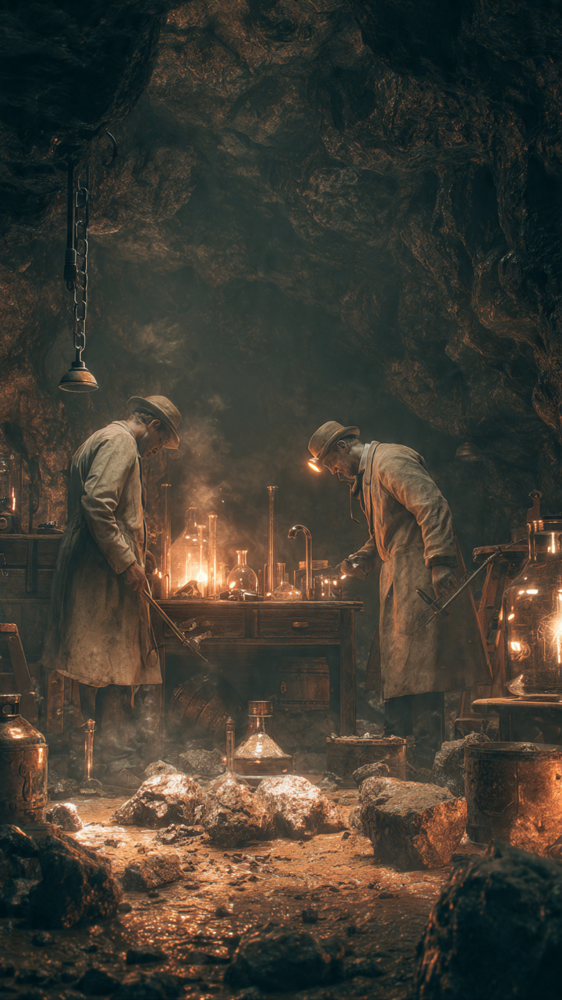
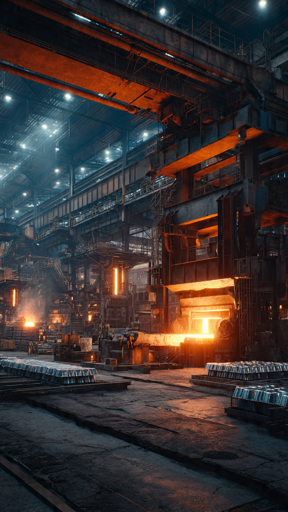

```html
المعدن الذي كان أغلى من الذهب ثم أصبح في كل منزل | اكتشافات وعلوم
```
اليوم، إذا فتحت مطبخك أو نظرت حولك في أي مكان تقريبًا، فمن الصعب ألا تجد شيئًا مصنوعًا من الألومنيوم.
علب المشروبات.
أدوات الطهي.
قطع السيارات والطائرات.
حتى بعض أجزاء المباني الحديثة.
إنه معدن خفيف وقوي أصبح جزءًا طبيعيًا من حياتنا اليومية.
لكن قبل مئات السنين...
كان الألومنيوم أغلى من الذهب.
في القرن التاسع عشر، لم يكن الناس يستطيعون الحصول على الألومنيوم بسهولة.
فقد كان موجودًا في الطبيعة بكميات كبيرة، لكنه لم يكن يظهر كمعدن نقي.
كان مرتبطًا بعناصر أخرى داخل الصخور، وكان فصل هذه العناصر عملية صعبة جدًا.
ولهذا السبب أصبح الألومنيوم مادة نادرة للغاية.
كان العلماء يعرفون وجود هذا المعدن، لكنهم لم يجدوا طريقة فعالة لاستخراجه.
وفي عام 1855، عُرضت قطعة من الألومنيوم في معرض عالمي بباريس.
كان الزوار ينظرون إليها بإعجاب شديد، لأن هذا المعدن الجديد كان مختلفًا عن كل ما عرفوه.
كان لامعًا مثل الفضة...
لكنه أخف بكثير.
وصلت قيمة الألومنيوم إلى درجة أن بعض الحكام والأثرياء كانوا يحتفظون بأدوات مصنوعة منه كرمز للثروة.
وتُروى قصة شهيرة أن الإمبراطور الفرنسي نابليون الثالث كان يقدم الطعام لضيوفه المهمين باستخدام أدوات من الألومنيوم، بينما يستخدم الآخرون أدوات من الذهب والفضة.
لكن العلماء كانوا يعلمون أن هذا المعدن لن ينتشر إلا إذا وجدوا طريقة لإنتاجه بكميات كبيرة.
فالمشكلة لم تكن في وجود الألومنيوم...
بل في الوصول إليه.
وبينما كان كثيرون يحاولون حل هذا اللغز، كان هناك شابان في قارتين مختلفتين يعملان على فكرة ستغير مستقبل هذا المعدن إلى الأبد.
ولم يكونا يعلمان أن اكتشافهما سيجعل الألومنيوم ينتقل من معدن نادر جدًا...
إلى مادة موجودة في كل منزل تقريبًا.
📷 الصورة رقم 1

في نهاية القرن التاسع عشر، كان حلم إنتاج الألومنيوم بكميات كبيرة ما زال بعيدًا.
فالمصانع كانت تحتاج إلى طريقة أسرع وأرخص لفصل المعدن عن مركباته.
وفي ذلك الوقت، كان العلماء يبحثون عن حل باستخدام الكهرباء.
فقد اكتشفوا أن التيار الكهربائي يمكن أن يساعد في فصل بعض العناصر الكيميائية، لكنهم كانوا يحتاجون إلى طريقة مناسبة لتطبيق ذلك على الألومنيوم.
وفي عام 1886، حدث تطور غيّر التاريخ.
كان هناك شاب أمريكي اسمه تشارلز مارتن هول يعمل في مختبره ويحاول إيجاد طريقة لإنتاج الألومنيوم.
وفي نفس الفترة تقريبًا، كان شاب فرنسي اسمه بول هيرو يجري تجارب مشابهة في بلده.
وبشكل مستقل عن بعضهما، توصلا إلى فكرة قريبة جدًا.
استخدما عملية تعتمد على الكهرباء لصهر مركبات الألومنيوم وفصل المعدن منها.
كانت الفكرة بسيطة في شكلها...
لكن تأثيرها كان هائلًا.
فجأة أصبح من الممكن إنتاج الألومنيوم بكميات كبيرة وبتكلفة أقل بكثير.
بعد نجاح هذه الطريقة، بدأت مصانع الألومنيوم في الظهور.
ولم يعد المعدن حكرًا على الأثرياء أو المتاحف.
بدأ يدخل في الصناعات المختلفة.
فهو خفيف مقارنة بالحديد، ولا يصدأ بسهولة، ويمكن تشكيله بأشكال كثيرة.
كان الطيران من أكبر المجالات التي استفادت منه.
فصناعة الطائرات تحتاج إلى مواد قوية وخفيفة في نفس الوقت.
وكان الألومنيوم مناسبًا جدًا لهذا الهدف.
ومع تطور التكنولوجيا، أصبح جزءًا أساسيًا من الطائرات والمركبات الفضائية.
لكن رحلة الألومنيوم لم تنتهِ هنا.
فمع زيادة استخدامه، اكتشف العلماء طرقًا جديدة لتحسين قوته وإعادة تدويره.
وأصبح هذا المعدن الذي كان يومًا أغلى من الذهب...
موجودًا في كل مكان حولنا.
📷 الصورة رقم 2

بعد انتشار طريقة إنتاج الألومنيوم الجديدة، تغيرت مكانة هذا المعدن بالكامل.
فبعد أن كان قطعة نادرة لا يستطيع معظم الناس امتلاكها، أصبح مادة أساسية تدخل في آلاف الصناعات حول العالم.
لم يعد الناس ينظرون إليه كمعدن غريب وثمين...
بل كواحد من أهم المواد التي ساعدت على بناء العالم الحديث.
في صناعة الطائرات، ساعد الألومنيوم على جعل المركبات أخف وزنًا وأكثر كفاءة.
وفي صناعة السيارات، استخدمه المهندسون لتقليل الوزن وتحسين الأداء.
وفي المباني، أصبح جزءًا من النوافذ والهياكل الحديثة بسبب خفته ومقاومته للعوامل الخارجية.
كما دخل الألومنيوم في صناعة الأجهزة الإلكترونية.
فالكثير من الحواسيب والهواتف والأجهزة الحديثة تستخدمه بسبب قدرته على تبديد الحرارة وشكله الأنيق.
وأصبح وجوده في حياتنا اليومية شيئًا عاديًا لدرجة أن قليلًا من الناس يتذكرون أنه كان يومًا معدنًا نادرًا للغاية.
لكن قصة الألومنيوم لا تتعلق فقط بالاختراع.
بل تُظهر كيف يمكن لاكتشاف علمي واحد أن يغيّر قيمة شيء بالكامل.
فالمشكلة لم تكن أن الألومنيوم غير موجود.
بل أن الإنسان لم يكن يعرف الطريقة المناسبة للوصول إليه.
واليوم، يُعد الألومنيوم من أكثر المعادن إنتاجًا واستخدامًا في العالم.
كما أن إعادة تدويره أصبحت مهمة جدًا، لأنه يمكن استخدامه مرة أخرى مع توفير قدر كبير من الطاقة مقارنة بإنتاجه من خاماته الأصلية.
وهكذا...
كان هناك زمن كان فيه الألومنيوم أغلى من الذهب، وكان الناس ينظرون إليه بإعجاب كأنه كنز نادر.
ثم جاء اكتشاف علمي صغير غيّر كل شيء.
تحول المعدن الغالي إلى مادة يستخدمها الجميع.
وأثبتت قصته أن قيمة الأشياء لا تعتمد فقط على ندرتها...
بل على قدرة الإنسان على فهمها واستخدامها.